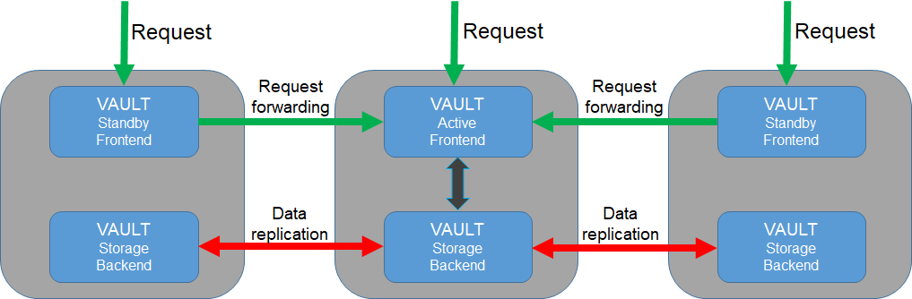

Service design and implementation
In this section, the design and implementation of the service will be explained. It may be interesting for advanced users and developers how to achieve high availability of the service via Dynamic DNS.
Vault servers
Three Vault servers located at IISAS, INFN and IFCA for high availability with server names:
vault-iisas.services.fedcloud.eu,
vault-infn.services.fedcloud.eu,
vault-ifca.services.fedcloud.eu.
The servers are connected together to a cluster (one active, two standby). If the active server falls, one of the remaining standby servers will become active automatically. Data is replicated among servers using the Raft Consensus algorithm supported by Vault integrated storage.
Users can connect directly to any of the mentioned servers. If the connected server is in standby mode, it will forward users’ requests to the active server.
{kind=link}
Generic endpoint and high availability
As mentioned above, users can use any of the endpoints directly:
However, accessing the service via the endpoints is not recommended: if a server is down, its endpoint is not accessible.
For convenience and high availability, a generic endpoint https://vault.services.fedcloud.eu:8200 should be used for accessing the service. The endpoint will be attached to one of the vault-infn and vault-ifca server instances automatically via Dynamic DNS service (located at IISAS). A simple cron script, running on the server instances at INFN and IFCA, will make a periodically check and assign the generic hostname vault.services.fedcloud.eu to the healthy server.
The recovery time of the generic endpoint, in the case of the unscheduled downtime of the generic endpoint’s server, is T+1 minutes, where T is the interval between cron checks (1min) . In the case of scheduled downtime for maintenance, admins simply assign the generic endpoint to the other server instance before shutdowning the service.